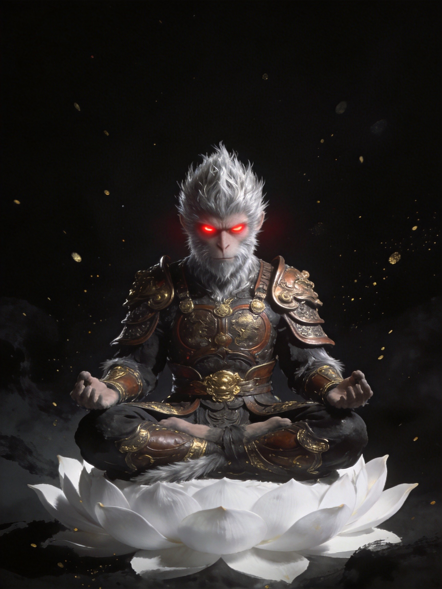
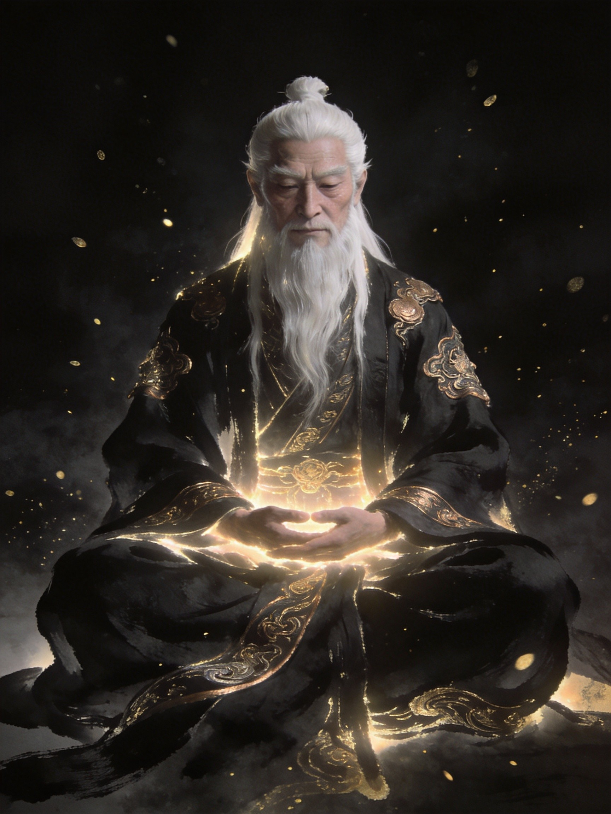

命运之轮 · 关键人物

孙悟空
齐天大圣 · 悟字辈花果山仙石孕育而生，天生灵慧。为求长生拜入菩提祖师门下，赐名"悟空"。大闹天宫后被压五行山五百年。
在藏子世间，他挡在主角身前对抗漫天仙佛："师弟，你终于来了。"
大圣一脉
命运节点
接引者

菩提老祖
方寸之主 · 觉悟圆满方寸山斜月三星洞的主人，独立于三界之外，超脱于五行之中。超越时间的存在，见证无数宇宙的生灭。
"你的觉，与我的觉，终将交汇于命运的终点。觉字机缘，非你莫属。"
神秘导师
命运策划者
诸天万法
主宇宙 · 互动叙事
时空流转 · 命运轨迹
太初
天地初开
混沌如鸡子，鸿蒙初判。菩提老祖已存在于世外之地，独立于三界之外。
远古
方寸山立宗
菩提老祖创立斜月三星洞，门下辈分：广、大、智、慧、真、悟、如、圆、觉。洞中一日等于外界一年。
上古
石猴出世
花果山仙石孕育石猴，天生灵慧，成为美猴王。
上古
拜师学艺
石猴漂洋过海拜入菩提祖师门下，赐名"悟空"，列"悟"字辈。
上古
大闹天宫
悟空大闹龙宫地府，被封"齐天大圣"，后因蟠桃盛会再度反下天庭。
五百年前
五行山下
惊动如来佛祖，悟空被压五行山五百年。时间线开始改变。
现在
觉字机缘
主角穿越到藏子世间，成为"觉"字辈最后一人。孙悟空挡在身前："师弟，你终于来了。"
未来
诸天交汇
无数世界正在融合，揭开藏子世间的终极秘密，一切都刚刚开始...